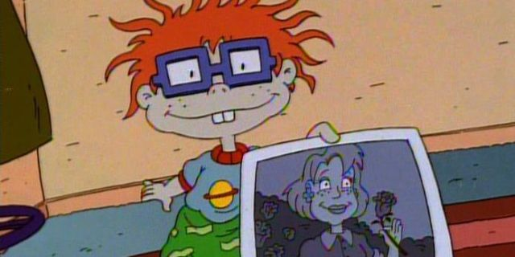
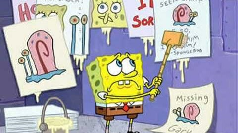
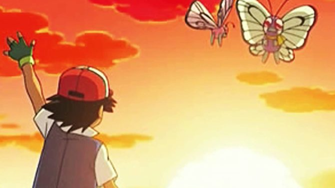
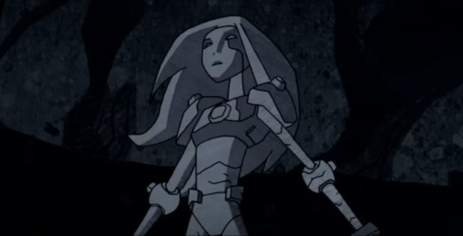
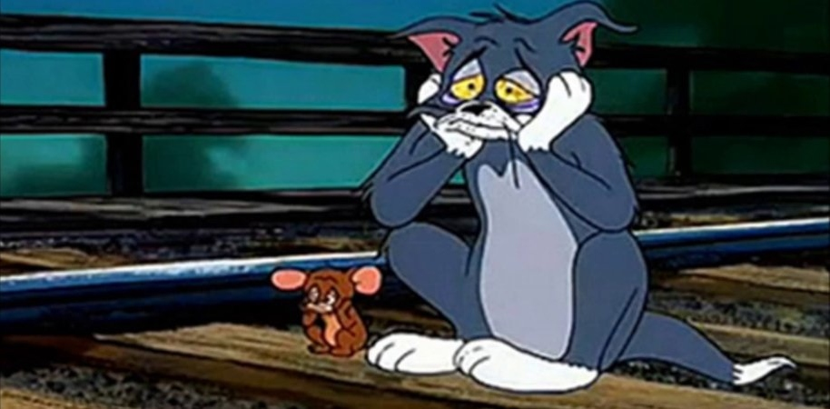
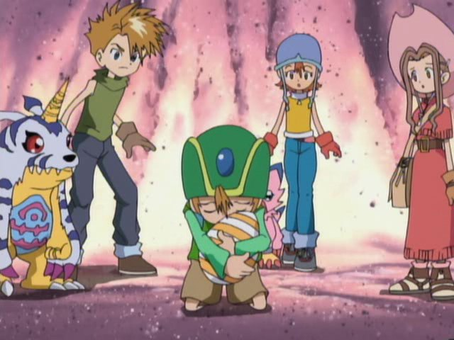

Desenhos animados alegraram a infância de muita gente com seus personagens divertidos e suas aventuras incríveis. Todo mundo tem algum desenho que marcou sua infância e o alegrava nos momentos mais triste. Entretanto, além de trazer alegria, os desenhos também podiam ser bem marcantes fazendo outra coisa: nos deixando emocionados e tristes. Ainda que isso não tenha arruinado nossa infância, alguns desenhos tinham histórias bem tocantes que nem sempre terminam no final feliz para todo mundo, mesmo que muitas delas nos ensinassem valorosas lições. Listamos 7 das cenas mais emocionantes que os desenhos animados nos proporcionaram na infância:

Rugrats – Os Anjinhos
No desenho Rugrats – Os Anjinhos, há um episódio de Dia das Mães em que todos os bebês tentam encontram o melhor presente para suas mães, menos Chucky, que não possui uma mãe. Os bebês então tentam descobrir o motivo de Chucky não ter uma mãe e ao fim do episódio, o pai de Chucky lhe conta a história de sua mãe, que morreu quando ele ainda era um bebê.

Bob Esponja
O episódio Gary Volte para Casa é um dos mais triste do desenho cômico. Nele, Bob Esponja esquece de alimentar Gary e o caracol resolve fugir de casa. Bob então começa a procurar por Gary e relembra cada momento de sua vida em que ele e o caracol passaram juntos.

Pokémon
Na sua jornada, Ash já se despediu de diversos pokémon, mas um dos momentos mais triste foi sua primeira despedida: quando ele deus adeus a Butterfree, o primeiro pokémon que capturou, para que ele pudesse ficar ao lado de uma parceira. Em um incrível e triste momento, Ash e Pikachu vêem Butterfree voando com sua parceira para longe, enquanto recordam tudo o que passaram juntos.

Jovens Titãs
Na primeira versão do desenho dos Jovens Titãs, um dos momentos mais emocionantes foi quando Terra, uma heroína que entra para os Titãs, mas acabo os traindo, resolve voltar para o lado do bem e se sacrificar para salvar os heróis de um vulcão em erupção. Durante seu sacrifício, ela se torna pedra e os titãs prestam homenagem a ela, em uma das cenas mais triste do desenho.

Tom e Jerry
Um dos episódios mais tristes de Tom e Jerry foi lançado em 1959. Intitulado Blue Cat Blues, o episódio mostra como Tom fica depressivo ao perder uma namorada. Jerry conta toda a história da melancólica história de amor no episódio, até que ao final ele descobre que sua namorada também o deixou. O rato e o gato então podem ser vistos tristonhos em frente sentados em frente a um trilho de trem. Quando episódio termina, ouvimos o trem chegar, mas não vemos nada, de modo que o destino dos personagens é deixado em aberto.

Digimon
Assim como a Terra dos Jovens Titãs, Angemon precisou se sacrificar no final do primeiro arco do desenho Digimon. O companheiro do pequeno T.K. usou todo o seu poder para salvar os digiescolhidos de Devimon, e com isso, precisou regredir à forma de um ovo, em uma das cenas mais belas do seriado.